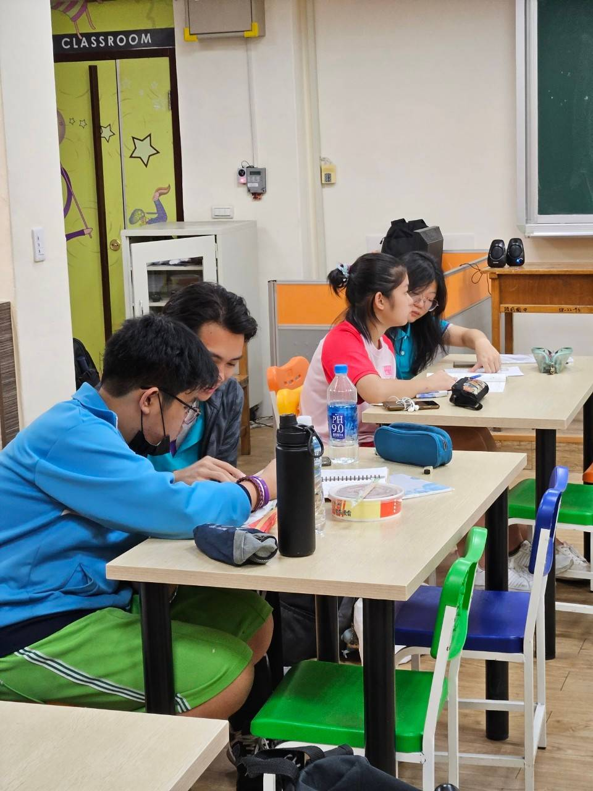
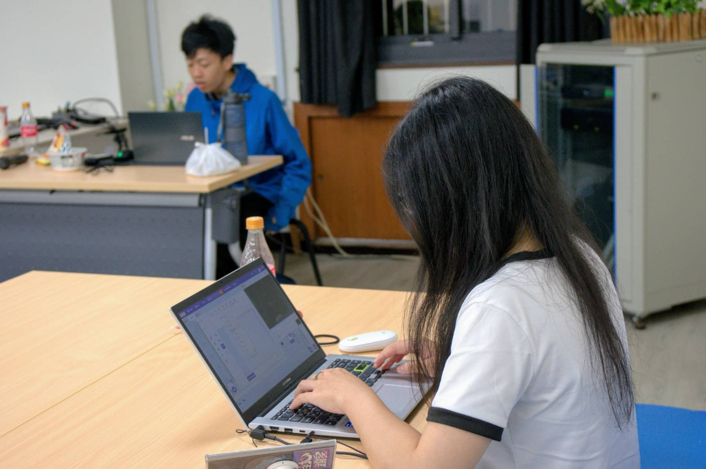
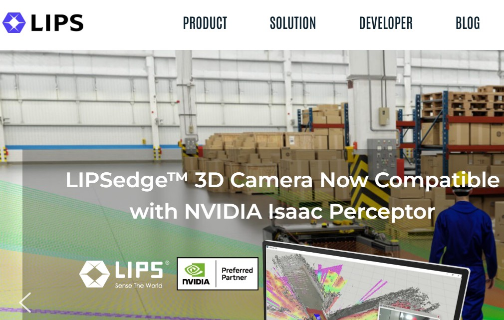

李勻歆 Yun-xin Lee
一個充滿好奇心，喜歡探索的人。
關於我
我是一個充滿好奇心的人，喜歡探索，也樂於從實際互動中累積自己的經驗。個性溫和細膩、對人有耐心，也習慣將複雜的事情拆解與規劃。 從雙主修資訊工程、參與專案實習、到實際接觸用戶與內容，我一步步確定自己想走向資訊與科技應用的道路。 我不是會追求一蹴可幾的人，但我重視效率與負責任的執行力，願意在過程中不斷嘗試與調整。我相信這樣的特質，能讓我成為團隊中可靠的一份子，也期待在未來持續探索、貢獻並成長。
大學在學經歷
大一上下學期
- 杏林管弦樂團大提琴手

大二上學期
- 頭前國中課後輔導老師
- 科技系學會行銷股

大二下學期
- 程式語言課堂助教
- 團隊參與資工系黑客松 24hrs 遊戲競賽
大三上學期
- 2024 郵政大數據競賽團隊優等
- 參與教育 AI 學習平台系統開發 查看更多
工作經驗
查看個人履歷
網站企劃編輯
網站改版專案，負責內容搬遷與頁面結構優化。使用WordPress 後台操作，導入關鍵字與 meta 描述等 SEO 優化策略。
首次參與企業專案，與產品經理、設計師及工程師定期溝通，理解專案開發節奏與合作方式。
立普思股份有限公司 2023/12~2024/3